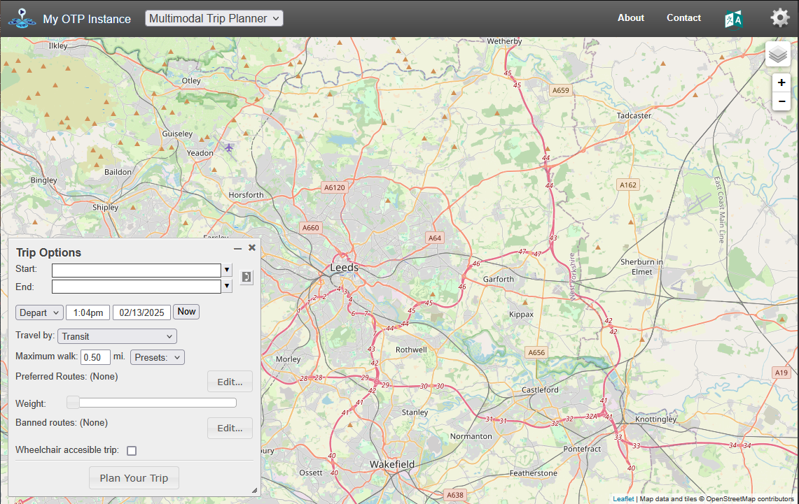

source("https://git.io/JvGjF")Practical 4: Routing
1 Setting Up
If you have not installed the package before hand. You can use ITS Go to do an easy setup of your computer
The packages we will be using are:
library(sf) # Spatial data functions
library(tidyverse) # General data manipulation
library(stplanr) # General transport data functions
library(dodgr) # Local routing and network analysis
library(opentripplanner) # Connect to and use OpenTripPlanner
library(tmap) # Make maps
library(osmextract) # Download and import OpenStreetMap data
tmap_mode("plot")2 Using OpenTripPlanner to get routes
We have setup the Multi-modal routing service OpenTripPlanner for West Yorkshire. Try typing this URL — otp. saferactive. org (no spaces) — during the session into your browser. You should see something like this:

OTP Web GUI
Exercise
- Play with the web interface, finding different types of routes. What strengths/limitations can you find?
2.1 Connecting to OpenTripPlanner
To allow R to connect to the OpenTripPlanner server, we will use the opentripplanner package and the function otp_connect.
# ip = "localhost" # to run it on your computer (see final bonus exercise)
ip = "otp.saferactive.org" # an actual server
otpcon = otp_connect(hostname = ip,
port = 80,
router = "west-yorkshire")If you have connected successfully, then you should get a message “Router exists.”
To get some routes, we will start by importing some data we have used previously. Note that the data frame has 78 columns (only a few of which are useful) and 1k rows:
u = "https://github.com/ITSLeeds/TDS/releases/download/22/desire_lines_100.geojson"
desire_lines = read_sf(u)
dim(desire_lines)Exercise
Subset the and overwrite the desire_lines data frame with the = assignment operator so that it only has the following columns: geo_code1, geo_code2, all, bicycle, foot, car_driver, and geometry. You can test the that the operation worked by executing the object name, the result should look like that shown below.
Use the tmap package to plot the desire_lines. Choose different ways to visualise the data so you can understand local commuter travel patterns. See example plot below.
This dataset has desire lines, but most routing packages need start and endpoints, so we will extract the points from the lines using the stplanr::line2df function. An then select the top 3 desire lines.
Exercise
Produce a data frame called desire which contains the coordinates of the start and endpoints of the lines in desire_lines but not the geometries. Hint
?stplanr::line2dfand?dplyr::bind_colsSubset out the top three desire lines by the total number of commuters and create a new data frame called desire_top. Hint
?dplyr::slice_max
desire_top = desire_lines %>%
top_n(n = 3, wt = car_driver)- Find the driving routes for desire_top and call them routes_top using opentripplanner::otp_plan
To find the routes for the first three desire lines use the following command:
routes_drive_top = route(
l = desire_top,
route_fun = otp_plan,
mode = "CAR",
otpcon = otpcon
)- Plot routes_drive_top using the tmap package in interactive mode. You should see something like the image below.
tmap_mode("view")
tm_shape(routes_drive_top) + tm_lines()tmap_mode("plot")We can also get Isochrones from OTP.
sf::sf_use_s2(FALSE)
isochrone = otp_isochrone(otpcon, fromPlace = c(-1.558655, 53.807870),
mode = c("BICYCLE","TRANSIT"),
maxWalkDistance = 3000)
isochrone$time = isochrone$time / 60
tm_shape(isochrone) +
tm_fill("time", alpha = 0.6)To save overloading the server, we have pre-generated some extra routes. Download these routes and load them into R.
u = "https://github.com/ITSLeeds/TDS/releases/download/22/routes_drive.geojson"
routes_drive = read_sf(u)
u = "https://github.com/ITSLeeds/TDS/releases/download/22/routes_transit.geojson"
routes_transit = read_sf("transit_routes.gpkg")3 Route Networks
Route networks (also called flow maps) show transport demand on different parts of the road network.
Now we have the number of commuters and their routes, we can produce a route network map using stplanr::overline.
rnet_drive <- overline(routes_drive, "car_driver")Exercise
- Make a route network for driving and plot it using the tmap package. How is is different from just plotting the routes?
4 Line Merging
Notice that routes_transit has returned separate rows for each mode (WALK, RAIL). Notice the route_option column shows that some routes have multiple options.
Let’s suppose you want a single line for each route.
Exercise
- Filter the routes_transit to contain only one route option per origin-destination pair.
Now We will group the separate parts of the routes together.
routes_transit_group = routes_transit %>%
dplyr::group_by(fromPlace, toPlace) %>%
dplyr::summarise(distance = sum(distance))We now have a single row, but instead of a LINESTRING, we now have a mix of MULTILINESTRING and LINESTRING, we can convert to a LINESTRING by using st_line_merge(). Note how the different columns where summarised.
First, we must separate out the MULTILINESTRING and LINESTRING
routes_transit_group_ml = routes_transit_group[st_geometry_type(routes_transit_group) == "MULTILINESTRING", ]
routes_transit_group = routes_transit_group[st_geometry_type(routes_transit_group) != "MULTILINESTRING", ]
routes_transit_group_ml = st_line_merge(routes_transit_group_ml)
routes_transit_group = rbind(routes_transit_group, routes_transit_group_ml)Exercise
- Plot the transit routes, what do you notice about them?
Bonus Exercise
- Redo exercise 16 but make sure you always select the fastest option.
5 Network Analysis (dodgr)
Note Some people have have problems running dodgr on Windows, if you do follow these instructions.
We will now analyse the road network using dodgr. Network analysis can take a very long time on large areas. So we will use the example of the Isle of Wight, which is ideal for transport studies as it is small, but has a full transport system including a railway and the last commercial hovercraft service in the world.
First we need to download the roads network from the OpenStreetMap using osmextract::oe_get. We will removed most of the paths and other features and just focus on the main roads. Then use dodgr::weight_streetnet to produce a graph of the road network.
roads = oe_get("Isle of Wight", extra_tags = c("maxspeed","oneway"))
roads = roads[!is.na(roads$highway),]
road_types = c("residential","secondary","tertiary",
"unclassified","primary","primary_link",
"secondary_link","tertiary_link")
roads = roads[roads$highway %in% road_types, ]
graph = weight_streetnet(roads)We will find the betweenness centrality of the Isle of Wight road network. This can take a long time, so first lets check how long it will take.
estimate_centrality_time(graph)
centrality = dodgr_centrality(graph)We can convert a dodgr graph back into a sf data frame for plotting using dodgr::dodgr_to_sf
clear_dodgr_cache()
centrality_sf = dodgr_to_sf(centrality)Exercise
Plot the centrality of the Isle of Wight road network. What can centrality tell you about a road network?
Use
dodgr::dodgr_contract_graphbefore calculating centrality, how does this affect the computation time and the results?
Bonus Exercises
- Work though the OpenTripPlanner vignettes Getting Started and Advanced Features to run your own local trip planner for the Isle of Wight.
Note To use OpenTripPlanner on your own computer requires Java 8. See the Prerequisites for more details. If you can’t install Java 8 try some of the examples in the vignettes but modify them for West Yorkshire.
- Read the dodgr vignettes